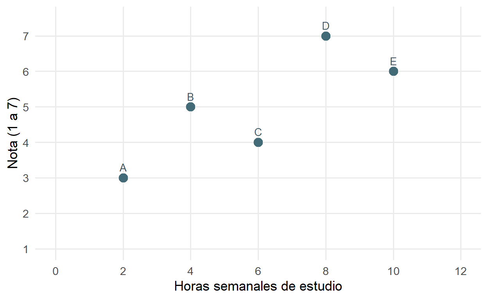
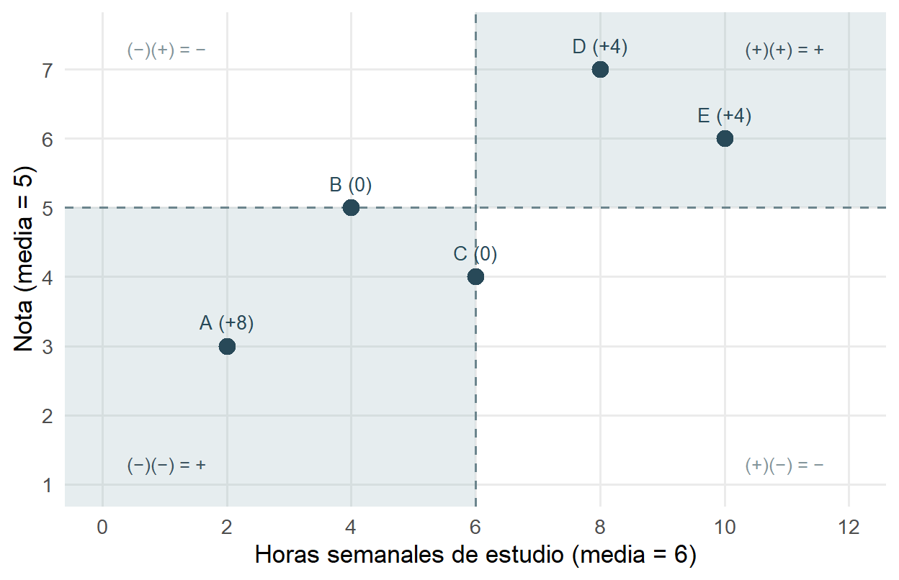
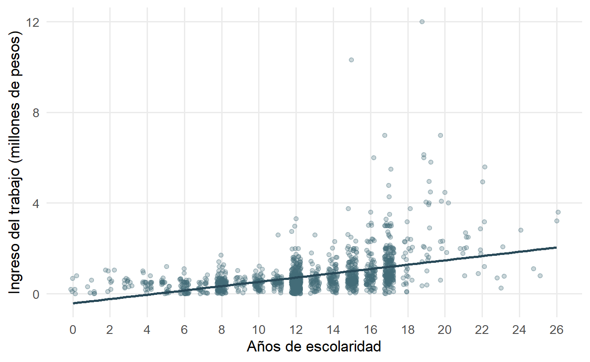
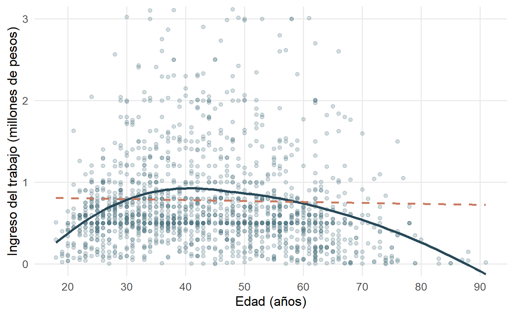

library(pacman)
p_load(dplyr, ggplot2, psych, sjPlot)Repaso Unidad 2: asociación y correlación
Sesión del miércoles, 11 de noviembre de 2026
Inicio · ¿Qué recordamos de la asociación entre variables?
Cuando analizamos la asociación entre variables, estudiamos si dos variables presentan un patrón conjunto. Para describir ese patrón utilizamos los coeficientes de correlación (Pearson, Spearman y Kendall), que nos entregan información sobre el sentido y magnitud de la asociación; para evaluar si la asociación observada en la muestra permite concluir algo sobre la población, retomamos los cinco pasos de inferencia de la Unidad 1. Además, podemos observar y describir la asociación de un grupo de variables, a través de las matrices de correlación.
Cómo trabajar: antes de mirar cada resultado, anticipe qué espera encontrar. Después lea la salida de R, responda las preguntas y abra la pauta solo después de su intento.
\[ \text{Mirar}\rightarrow\text{anticipar}\rightarrow\text{calcular}\rightarrow\text{volver a mirar} \]
Paquetes. Utilizaremos dplyr para preparar los datos, ggplot2 para los gráficos y, en el Ejercicio B, psych y sjPlot para contar casos y construir las matrices de correlación.
Ejercicio 1 · Horas de estudio y nota
Pregunta de investigación
¿En qué medida las horas semanales de estudio y la nota obtenida en una evaluación se encuentran asociadas en este pequeño grupo de estudiantes?
Para recordar los fundamentos de la unidad, resolveremos juntos y paso a paso un ejemplo simple con solo 5 estudiantes. Las horas corresponden a horas semanales de estudio individual y la nota está en escala de 1 a 7. Los datos son simulados para que todos los cálculos puedan hacerse a mano.
| Estudiante | Horas de estudio (\(x\)) | Nota (\(y\)) |
|---|---|---|
| A | 2 | 3 |
| B | 4 | 5 |
| C | 6 | 4 |
| D | 8 | 7 |
| E | 10 | 6 |
Paso 1 · Mirar y anticipar
A medida que aumentan las horas, ¿la nota tiende a subir o a bajar? ¿El patrón parece aproximadamente recto?

Las notas tienden a ser más altas cuando hay más horas de estudio, aunque no de forma perfecta: C estudia más que B y obtiene menos nota, y lo mismo ocurre entre D y E. La tendencia es aproximadamente recta y ascendente, así que anticipamos una asociación positiva.
Paso 2 · Desviaciones respecto de la media
Para medir el patrón conjunto, primero ubicamos a cada estudiante respecto del promedio de cada variable:
\[ \bar{x}=\frac{2+4+6+8+10}{5}=6 \qquad \bar{y}=\frac{3+5+4+7+6}{5}=5 \]
La desviación de cada caso es su distancia a la media: \(x_i-\bar{x}\) y \(y_i-\bar{y}\). Luego multiplicamos ambas desviaciones.
¿Qué signo tendrá el producto de un estudiante que está bajo ambas medias? ¿Y el de uno que está sobre una y bajo la otra?
| Estudiante | \(x_i-\bar{x}\) | \(y_i-\bar{y}\) | Producto |
|---|---|---|---|
| A | \(2-6=-4\) | \(3-5=-2\) | \(+8\) |
| B | \(4-6=-2\) | \(5-5=0\) | \(0\) |
| C | \(6-6=0\) | \(4-5=-1\) | \(0\) |
| D | \(8-6=+2\) | \(7-5=+2\) | \(+4\) |
| E | \(10-6=+4\) | \(6-5=+1\) | \(+4\) |
| Suma | \(\mathbf{+16}\) |
- A está bajo ambas medias: \((-)(-)=+\). Es el caso más alejado de ambas, por eso aporta el producto más grande.
- D y E están sobre ambas medias: \((+)(+)=+\).
- B y C coinciden con una de las medias, por lo que su aporte es cero.
- Nadie queda en lados opuestos de las medias, así que no hay productos negativos.
La figura muestra la misma idea: las medias dividen el plano en cuatro cuadrantes, y los puntos en los cuadrantes sombreados aportan productos positivos.

Paso 3 · Covarianza
La covarianza promedia esos productos, dividiendo por \(n-1\):
\[ \operatorname{cov}(X,Y)=\frac{\sum_{i=1}^{n}(x_i-\bar{x})(y_i-\bar{y})}{n-1}=\frac{16}{5-1}=4 \]
El signo positivo confirma lo que anticipamos al mirar la nube.
La covarianza es 4. ¿Eso es mucho o poco? ¿Qué pasaría si midiéramos el estudio en minutos en vez de horas?
No podemos saberlo: la covarianza está expresada en horas × puntos de nota. Si midiéramos el estudio en minutos, sería 60 veces mayor (240) sin que el patrón cambiara. La covarianza nos dice el signo, pero su magnitud depende de las unidades. Por eso necesitamos estandarizarla.
Paso 4 · Correlación de Pearson y \(R^2\)
Pearson divide la covarianza por el producto de las desviaciones estándar, con lo que las unidades se cancelan y el resultado queda entre \(-1\) y \(1\). En estos datos, \(s_X=\sqrt{10}\approx3{,}16\) y \(s_Y=\sqrt{2{,}5}\approx1{,}58\), y su producto es exacto: \(\sqrt{10}\times\sqrt{2{,}5}=\sqrt{25}=5\).
\[ r=\frac{\operatorname{cov}(X,Y)}{s_X\,s_Y}=\frac{4}{5}=0{,}80 \]
Elevando al cuadrado obtenemos el coeficiente de determinación:
\[ R^2=r^2=0{,}80^2=0{,}64 \]
Recordemos. Según los criterios de Cohen, ¿cómo clasificaría usted \(r=0{,}80\)? ¿Qué significa que \(R^2=0{,}64\)?
\(r=0{,}80\) es una asociación grande (\(|r|>0{,}5\)). Un \(R^2=0{,}64\) indica que horas de estudio y nota comparten un 64% de su varianza en este grupo.
En R, todo lo anterior se obtiene en tres líneas:
horas <- c(2, 4, 6, 8, 10)
nota <- c(3, 5, 4, 7, 6)
cov(horas, nota)[1] 4cor(horas, nota)[1] 0.8cor(horas, nota)^2[1] 0.64Paso 5 · Interpretar y volver a mirar
«En este grupo de cinco estudiantes, las horas semanales de estudio y la nota presentan una asociación positiva (\(r=0{,}80\)) de magnitud grande: quienes estudian más horas tienden a obtener notas más altas. Ambas variables comparten un 64% de su varianza. Esta asociación no demuestra que estudiar más cause mejores notas».
Volver a mirar: el valor de \(r\) es coherente con la nube, que muestra una tendencia ascendente clara pero no perfecta (C y E rompen la secuencia). Por eso \(r\) es alto, pero no igual a 1.
Paso 6 · ¿Podemos generalizar?
Con una correlación tan grande, ¿podemos concluir que en la población de estudiantes existe esta asociación?
Aplicamos la prueba de hipótesis para una correlación (\(H_0:\rho=0\); \(H_A:\rho\neq0\)):
\[ SE_r=\sqrt{\frac{1-r^2}{n-2}}=\sqrt{\frac{1-0{,}64}{5-2}}\approx0{,}346 \]
\[ t=\frac{r}{SE_r}=\frac{0{,}80}{0{,}346}\approx2{,}31 \qquad gl=3 \]
El valor crítico bilateral al 5% con 3 grados de libertad es \(\pm3{,}18\). Como \(2{,}31<3{,}18\), no rechazamos \(H_0\): aun con una correlación grande, cinco casos no aportan evidencia suficiente sobre la población. La magnitud describe el patrón en la muestra; la inferencia depende también del tamaño muestral.
Ejercicio Autónomo A · Escolaridad e ingreso del trabajo (CASEN 2024)
Pregunta de investigación
¿Se asocian los años de escolaridad y el ingreso del trabajo entre las personas ocupadas en Chile?
Utilizamos un subconjunto de 3.000 personas de la Encuesta CASEN 2024. Las variables escolaridad (años de estudio) e ingreso_trabajo (pesos mensuales) son cuantitativas. El ingreso solo existe para quienes trabajan, por lo que conservamos los casos con información en ambas variables.
load(url("https://github.com/cursos-metodos-facso/datos-ejemplos/raw/main/casen_barrio2024.rdata"))
casen_subset <- datos_casen |>
select(escolaridad, ingreso_trabajo) |>
mutate(across(everything(), as.numeric)) |>
na.omit() # listwise: casos con información en ambas variables
nrow(datos_casen) # total del subconjunto[1] 3000nrow(casen_subset) # personas ocupadas con ambos datos[1] 1707Antes de calcular. Observe la nube. ¿Qué signo anticipa para la correlación? ¿Ve algo en la distribución del ingreso que pueda afectar a Pearson?

cor.test(casen_subset$escolaridad, casen_subset$ingreso_trabajo, method = "pearson")
Pearson's product-moment correlation
data: casen_subset$escolaridad and casen_subset$ingreso_trabajo
t = 19.863, df = 1705, p-value < 2.2e-16
alternative hypothesis: true correlation is not equal to 0
95 percent confidence interval:
0.3941627 0.4712528
sample estimates:
cor
0.4335005 A1 · Mirar. Describa la dirección del patrón y la forma de la distribución del ingreso.
A2 · Calcular. Plantee \(H_0\) y \(H_A\). Identifique en la salida de cor.test() el valor de \(r\), \(t\), los grados de libertad, el valor \(p\) y el intervalo de confianza. Compruebe que \(gl=n-2\). Tome una decisión respecto de la hipótesis nula al 5% y al 1%.
A3 · Magnitud. Clasifique \(r\) según Cohen y calcule \(R^2\).
A4 · Pearson y Spearman. ¿Por qué Spearman es mayor que Pearson en estos datos? ¿Cuál reportaría usted?
cor.test(casen_subset$escolaridad, casen_subset$ingreso_trabajo,
method = "spearman", exact = FALSE)$estimate rho
0.4849331 A5 · Reporte. Redacte una conclusión de dos o tres líneas, sin afirmar causalidad.
Ejercicio Autónomo B · Confianza en instituciones y posición política (CEP 2026)
Pregunta de investigación
¿Cómo se asocian la confianza en distintas instituciones y la autoubicación política entre los adultos de Chile?
Utilizamos la Encuesta CEP N° 96 (abril-mayo de 2026, \(N=1.466\)) con seis variables:
| Variable | Qué representa | Escala |
|---|---|---|
conf_carab |
Confianza en Carabineros | 1 = nada … 4 = mucha |
conf_ffaa |
Confianza en las Fuerzas Armadas | 1 = nada … 4 = mucha |
conf_gobierno |
Confianza en el Gobierno | 1 = nada … 4 = mucha |
conf_congreso |
Confianza en el Congreso | 1 = nada … 4 = mucha |
conf_partidos |
Confianza en los partidos políticos | 1 = nada … 4 = mucha |
pos_pol |
Autoubicación política | 1 = izquierda … 10 = derecha |
En este ejercicio R no decide por nosotros. Antes de calcular la matriz debemos tomar dos decisiones y justificarlas: qué coeficiente usar y cómo tratar los casos perdidos.
Paso 1 · Observar los datos
load(url("https://github.com/cursos-metodos-facso/datos-ejemplos/raw/main/cep_2026_proc.RData"))
cep_subset <- datos_cep |>
select(conf_carab, conf_ffaa, conf_gobierno,
conf_congreso, conf_partidos, pos_pol) |>
mutate(across(everything(), as.numeric))¿Cuántos casos perdidos hay y cuántos casos quedan según cada tratamiento?
colSums(is.na(cep_subset)) # casos perdidos por variable conf_carab conf_ffaa conf_gobierno conf_congreso conf_partidos
5 26 17 40 26
pos_pol
260 sum(complete.cases(cep_subset)) # N con eliminación listwise[1] 1168psych::pairwiseCount(cep_subset) # N de cada par con eliminación pairwise conf_carab conf_ffaa conf_gobierno conf_congreso conf_partidos
conf_carab 1461 1438 1445 1422 1438
conf_ffaa 1438 1440 1427 1410 1424
conf_gobierno 1445 1427 1449 1417 1429
conf_congreso 1422 1410 1417 1426 1412
conf_partidos 1438 1424 1429 1412 1440
pos_pol 1205 1195 1200 1185 1195
pos_pol
conf_carab 1205
conf_ffaa 1195
conf_gobierno 1200
conf_congreso 1185
conf_partidos 1195
pos_pol 1206Paso 2 · Decidir y justificar
Decisión 1 · ¿Qué coeficiente? ¿Pearson, Spearman o Kendall? Justifique su elección.
Decisión 2 · ¿Cómo tratar los casos perdidos? ¿Listwise o pairwise? Justifique considerando:
- qué variable concentra los casos perdidos y por qué podría ocurrir;
- cuántos casos se pierden con cada tratamiento;
- qué gana y qué pierde con cada opción.
Paso 3 · Calcular y comprobar las decisiones
Calculamos la matriz con ambos coeficientes y, para cada uno, con ambos tratamientos de casos perdidos. Usamos sjPlot::tab_corr(), que además de cada coeficiente indica su significación estadística con asteriscos. En cada bloque, cambie de pestaña para comparar listwise y pairwise: fíjese en si cambian los coeficientes y si algún par gana o pierde asteriscos. La matriz con la que trabajará es la que corresponde a sus decisiones.
Spearman
sjPlot::tab_corr(cep_subset,
corr.method = "spearman",
na.deletion = "listwise",
triangle = "lower",
title = "Spearman · listwise (N = 1.168)")| conf_carab | conf_ffaa | conf_gobierno | conf_congreso | conf_partidos | pos_pol | |
|---|---|---|---|---|---|---|
| conf_carab | ||||||
| conf_ffaa | 0.622*** | |||||
| conf_gobierno | 0.463*** | 0.511*** | ||||
| conf_congreso | 0.224*** | 0.256*** | 0.345*** | |||
| conf_partidos | 0.127*** | 0.113*** | 0.231*** | 0.433*** | ||
| pos_pol | 0.351*** | 0.366*** | 0.524*** | 0.106*** | 0.014 | |
| Computed correlation used spearman-method with listwise-deletion. | ||||||
sjPlot::tab_corr(cep_subset,
corr.method = "spearman",
na.deletion = "pairwise",
triangle = "lower",
title = "Spearman · pairwise (N entre 1.185 y 1.445)")| conf_carab | conf_ffaa | conf_gobierno | conf_congreso | conf_partidos | pos_pol | |
|---|---|---|---|---|---|---|
| conf_carab | ||||||
| conf_ffaa | 0.585*** | |||||
| conf_gobierno | 0.450*** | 0.488*** | ||||
| conf_congreso | 0.235*** | 0.278*** | 0.363*** | |||
| conf_partidos | 0.151*** | 0.152*** | 0.276*** | 0.454*** | ||
| pos_pol | 0.346*** | 0.363*** | 0.518*** | 0.106*** | 0.020 | |
| Computed correlation used spearman-method with pairwise-deletion. | ||||||
Kendall (τ-b)
sjPlot::tab_corr(cep_subset,
corr.method = "kendall",
na.deletion = "listwise",
triangle = "lower",
title = "Kendall · listwise (N = 1.168)")| conf_carab | conf_ffaa | conf_gobierno | conf_congreso | conf_partidos | pos_pol | |
|---|---|---|---|---|---|---|
| conf_carab | ||||||
| conf_ffaa | 0.567*** | |||||
| conf_gobierno | 0.408*** | 0.455*** | ||||
| conf_congreso | 0.200*** | 0.229*** | 0.314*** | |||
| conf_partidos | 0.115*** | 0.103*** | 0.212*** | 0.410*** | ||
| pos_pol | 0.292*** | 0.306*** | 0.447*** | 0.091*** | 0.012 | |
| Computed correlation used kendall-method with listwise-deletion. | ||||||
sjPlot::tab_corr(cep_subset,
corr.method = "kendall",
na.deletion = "pairwise",
triangle = "lower",
title = "Kendall · pairwise (N entre 1.185 y 1.445)")| conf_carab | conf_ffaa | conf_gobierno | conf_congreso | conf_partidos | pos_pol | |
|---|---|---|---|---|---|---|
| conf_carab | ||||||
| conf_ffaa | 0.532*** | |||||
| conf_gobierno | 0.398*** | 0.434*** | ||||
| conf_congreso | 0.211*** | 0.249*** | 0.331*** | |||
| conf_partidos | 0.137*** | 0.138*** | 0.253*** | 0.431*** | ||
| pos_pol | 0.289*** | 0.303*** | 0.442*** | 0.090*** | 0.018 | |
| Computed correlation used kendall-method with pairwise-deletion. | ||||||
B1 · Comprobar las decisiones. Compare las cuatro tablas. ¿Cambian los coeficientes si usamos pairwise en vez de listwise, o Kendall en vez de Spearman? ¿Algún par cambia de significación estadística (gana o pierde asteriscos)?
B2 · Lectura de la matriz. Identifique la asociación más fuerte y la más débil.
B3 · Interpretación sustantiva. ¿Cómo interpreta usted que quienes se ubican más a la derecha confíen más en el Gobierno, Carabineros y las Fuerzas Armadas, pero no en el Congreso ni en los partidos?
B4 · Reporte. Redacte una conclusión breve sobre conf_gobierno–pos_pol que incluya y justifique sus decisiones.
Ejercicio Autónomo C · Edad e ingreso
Pregunta de investigación
¿Se asocian la edad y el ingreso del trabajo entre las personas ocupadas en Chile?
casen_edad <- datos_casen |>
select(edad, ingreso_trabajo) |>
mutate(across(everything(), as.numeric)) |>
na.omit()
nrow(casen_edad)[1] 1710cor.test(casen_edad$edad, casen_edad$ingreso_trabajo, method = "pearson")
Pearson's product-moment correlation
data: casen_edad$edad and casen_edad$ingreso_trabajo
t = -0.83407, df = 1708, p-value = 0.4044
alternative hypothesis: true correlation is not equal to 0
95 percent confidence interval:
-0.06751594 0.02725153
sample estimates:
cor
-0.02017753 Antes de mirar el gráfico. Con \(r\approx-0{,}02\) y \(p=0{,}40\), ¿concluiría usted que la edad y el ingreso no están relacionados? Anote su respuesta y luego observe la figura.

Línea continua: tendencia suavizada. Línea discontinua: recta que resume Pearson.
Calculemos ahora la correlación por separado para menores y mayores de 40 años:
casen_edad |>
mutate(tramo = ifelse(edad <= 40, "18 a 40 años", "41 años o más")) |>
group_by(tramo) |>
summarise(n = n(),
spearman = cor(edad, ingreso_trabajo, method = "spearman"))# A tibble: 2 × 3
tramo n spearman
<chr> <int> <dbl>
1 18 a 40 años 762 0.216
2 41 años o más 948 -0.272C1. Describa la forma del patrón en la figura. ¿Es lineal?
C2. ¿Por qué la correlación con toda la muestra es cercana a cero, si dentro de cada tramo etario hay asociaciones mayores?
C3. ¿Qué conclusión sobre edad e ingreso sería correcta? ¿Qué error cometería alguien que solo mira \(r\) y \(p\)?
Cierre de la sesión
Una correlación se interpreta respondiendo preguntas distintas, que no deben confundirse: el signo indica la dirección; el valor absoluto indica qué tan marcado es el patrón; el valor \(p\) indica si hay evidencia de asociación en la población; y el gráfico permite evaluar si el coeficiente representa bien los datos.
| Pregunta | Qué miramos |
|---|---|
| ¿Qué patrón muestran los datos? | Nube de puntos |
| ¿Qué coeficiente corresponde? | Nivel de medición, distribución, empates |
| ¿En qué dirección? | Signo de \(r\) |
| ¿Qué tan marcada? | \(\lvert r\rvert\) y criterios de Cohen |
| ¿Cuánta varianza comparten? | \(R^2=r^2\) |
| ¿Hay evidencia en la población? | \(H_0:\rho=0\), \(t\) o valor \(p\) |
| ¿Con cuántos casos? | \(N\) y observación de NA |